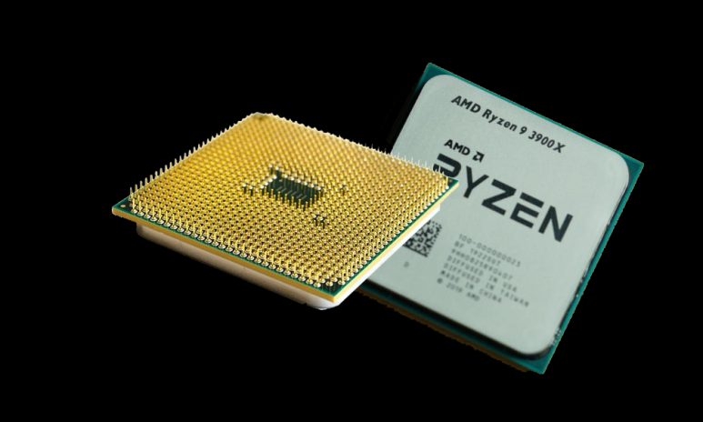

CPU
코어, 스레드, 캐쉬, 클럭... 이 용어들을 다 알아도 이 스펙만으로는 실제 성능을 유추하기는 어렵습니다. 그리고 그렇게 할 필요도 없구요.
아래 링크한 CPU벤치마크 사이트에서 본인이 관심있는 CPU성능을 검색해 보세요.
실제로 작업이나 게임에 필요한 명령들을 수행하면서 측정한 성능을 점수로 표시 해 두었습니다. 멀티성능이 높으면 작업에 유리하고 싱글성능이 높으면 게임에 유리하기는 한데, 현재 게임에 있어서는 GPU의 성능이 절대적으로 영향을 미치고 있으며, GPU의 성능을 100% 뽑아주는 수준이 넘어가면 성능차이는 미미 합니다.